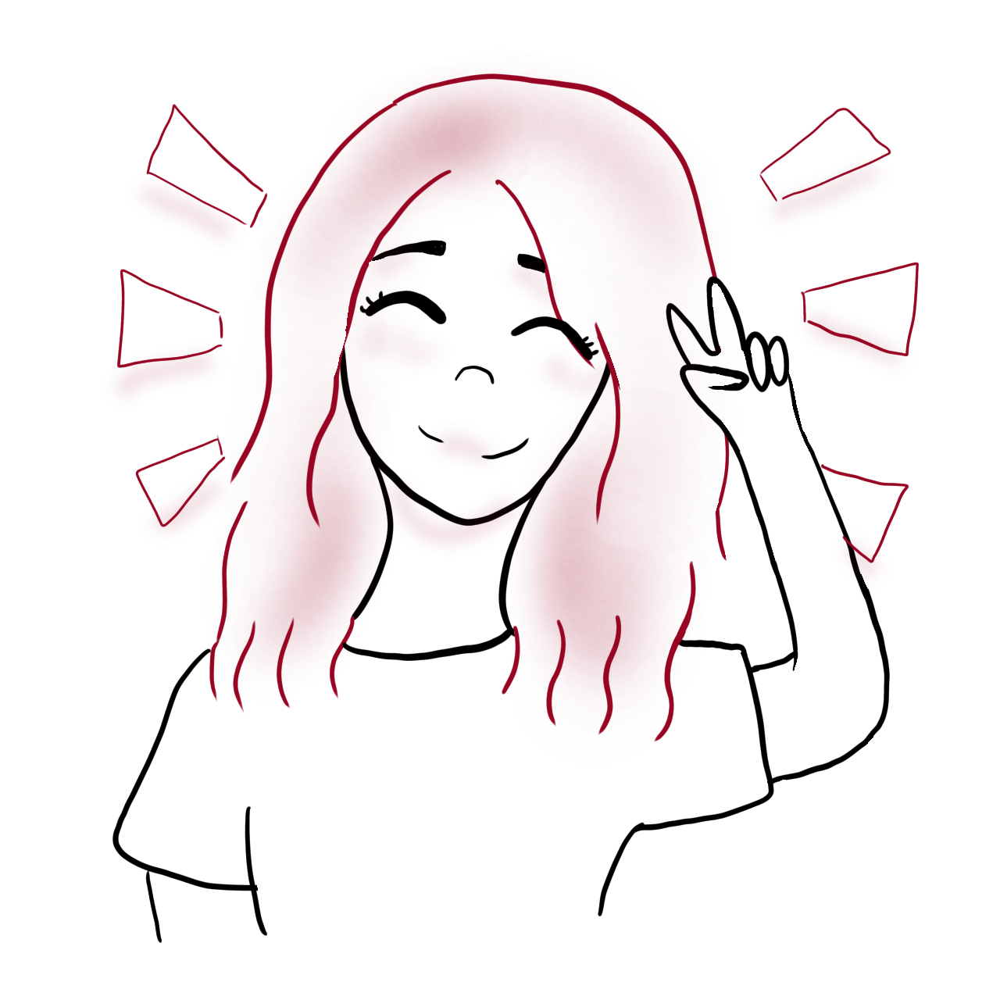

My name is Sally Soto and I am a multidisciplinary designer. I specialize in graphic design and utilize simplistic
illustrations within my work.
My recent passions have been UX/UI design, particularly in a marketing persepctive. I hope to conitnue to learn
more in this great field to combine my artistic passion with my logical passion.

Excellent HTML and CSS skills
Designed and maintained a website for George Mason Univeristy
Created responsive designs for website elements
I like to combine my illustrative passion within my deisgn work, as I believe it adds a unique sense of personality to my work